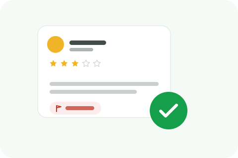

Businesses often reply to a review before realizing it might actually qualify for removal, then worry the response locks them in. Here's whether that's actually true on Trustpilot.

Responding to a review doesn't change whether it's eligible for removal. Trustpilot evaluates a flagged review against its own guidelines, genuine experience, abusive content, personal data, conflict of interest, and so on, based on the review itself, not on whether or how the business replied to it. A reply is a separate action from a flag, and the two don't affect each other procedurally.
It's an understandable assumption, a public reply can feel like you've acknowledged and accepted the review as legitimate, so people assume that locks in its legitimacy. But Trustpilot's flagging process looks at concrete grounds, is this a genuine customer, is the content abusive, is this actually about your business, not at how you reacted to the review afterward.
Indirectly, maybe, in a specific scenario. If your public response includes language that reads as confirming the interaction happened as described, "We're sorry the delivery was late", that could work against a case specifically built on "this customer never interacted with us." It's not that responding disqualifies removal generally, it's that a response confirming facts you'd need to dispute in a removal case creates a contradiction worth avoiding. This is worth thinking through before replying if you already suspect a review might not be genuine.
If you're confident the review violates a specific Trustpilot guideline, flagging it before responding publicly avoids any risk of your own words complicating the case later. If you're not sure it qualifies, or if it's a genuine complaint you want to address regardless of removal odds, responding thoughtfully is fine, and it doesn't close off a future removal flag if grounds for one do apply.
Go ahead. A prior response doesn't bar you from flagging a review afterward. Review what you actually said in your reply, if it doesn't contradict the grounds you're now citing, there's no procedural issue with flagging it after the fact.
Say a review claims a product arrived broken, and you replied publicly offering a replacement. Later you discover the order number mentioned doesn't match any record in your system, the review may actually not be from a real customer. Your earlier reply offering a replacement doesn't block a "not based on a genuine experience" flag, it was a good-faith response to what looked like a legitimate complaint at the time. What would matter is whether anything in that reply confirmed facts specific to a transaction that, it turns out, never happened.
None of this means responses are risk-free to write casually. A business that replies with specific, confirming detail, repeating back an order number, a date, a product name, the reviewer provided, is harder to walk back from later if it turns out the whole thing was fabricated. A general, good-faith response that doesn't confirm specifics avoids that problem entirely while still showing anyone reading that you took the complaint seriously.
Order of operations between responding and flagging isn't what determines eligibility, the review's actual content and whether it violates a specific guideline is. The only real consideration is making sure your own public response doesn't undercut the specific grounds you'd need for a removal case, not whether you responded at all.
We'll review the case, including anything you've already said publicly, and tell you honestly where you stand.